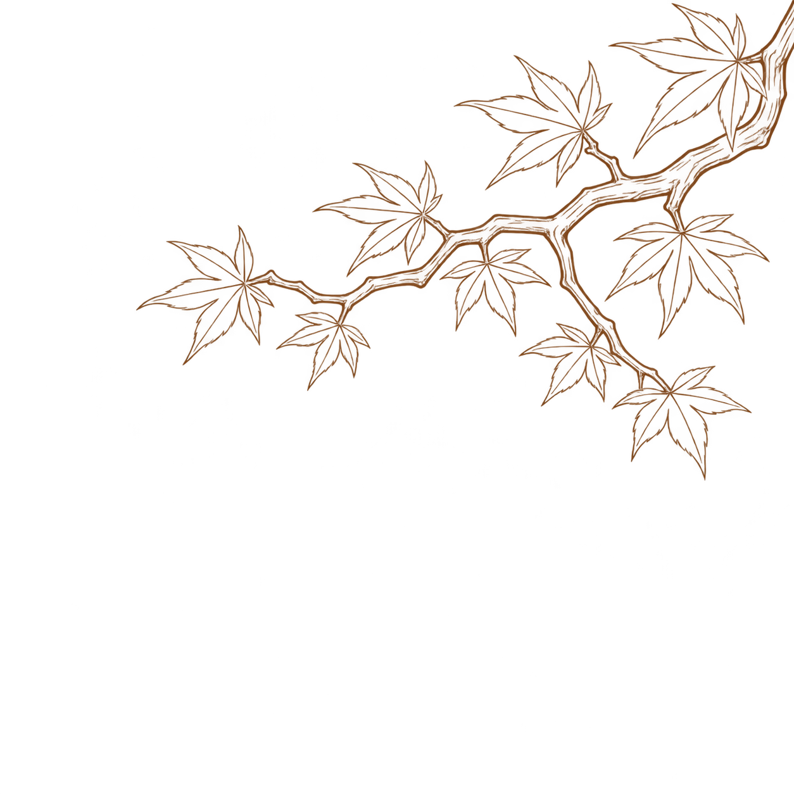

<!doctype html><html lang="zh"><meta charset="utf-8"><meta name="viewport" content="width=device-width"><title>PigBang 枫树枝优化</title><style>body{background:#eee8df;color:#704426;font:16px "Microsoft YaHei",sans-serif;margin:28px}main{max-width:1100px;margin:auto}.compare{display:grid;grid-template-columns:1fr 1fr;gap:20px}article{background:#fff6e9;border-radius:18px;padding:20px}img{width:100%;display:block}h1{font-size:25px}h2{font-size:18px}p{line-height:1.8}@media(max-width:650px){.compare{grid-template-columns:1fr}}</style><main><h1>PigBang · 右上枫树枝优化</h1><p>只修改枝干：增粗主枝、末端渐细、增加木质转折与分叉。保留铜色线稿和透明底。设计预览，尚未接入 App。</p><div class="compare"><article><h2>上一版</h2></article><article><h2>木质树枝版</h2><a href="L-02-woody-branch.png"></a></article></div></main></html>
